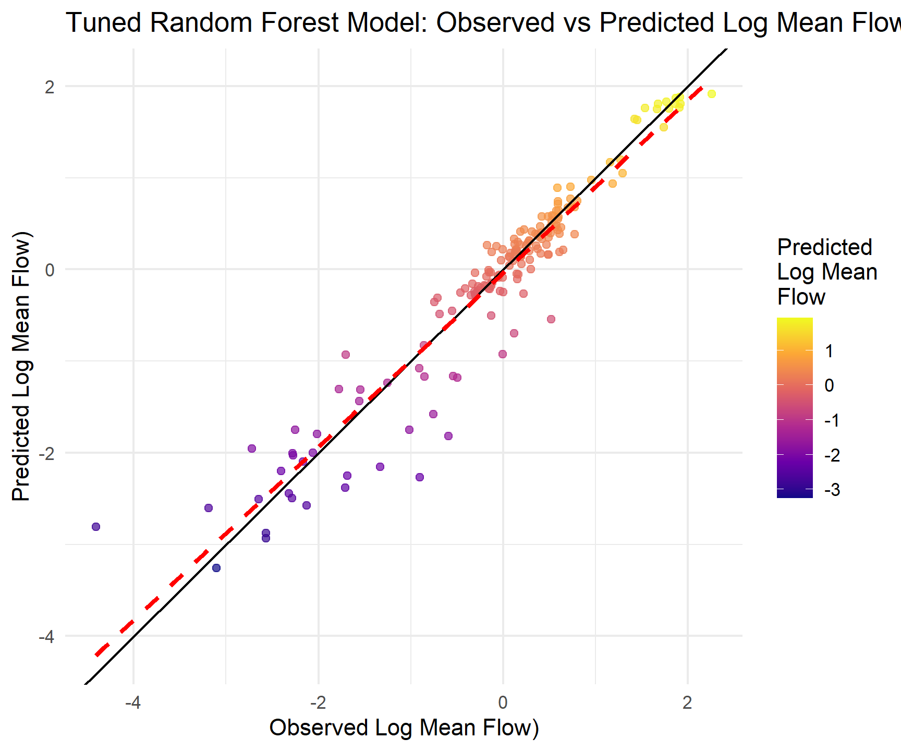

All CAMELS data and the PDF are downloaded in my data directory! According to the documentation PDF, the variable “zero_q_freq” is the frequency of days with daily discharge (Q) = 0 mm/day.
The output from the autoplot and rank_results functions show that the neural network outperforms the random forest, linear, and boosted trees models. Based on these comparisons, I would move forward with the neural network model.
Question 4a: Data Prep / Data Splitting
Code
# Set seedset.seed(123)# Transforming outcome var (already done above in earlier chunks, but for completeness),# also subsetting to variables I'm interested incamels2 <- camels %>%select(q_mean, p_mean, aridity, high_prec_freq, high_prec_dur, low_prec_freq, low_prec_dur, frac_forest, lai_max, gvf_max, slope_mean, elev_mean, soil_porosity, soil_conductivity, max_water_content, geol_porostiy, geol_permeability, area_gages2) %>%mutate(logQmean =log(q_mean)) %>%select(-q_mean) # Have to drop it for recipe later# Splitting data with 75% used for training, 25% for testingcamels_split2 <-initial_split(camels2, prop =0.75)camels_train2 <-training(camels_split2)camels_test2 <-testing(camels_split2)camels_cv2 <-vfold_cv(camels_train2, v =10)
Question 4b: Recipe
I have never predicted streamflow before, so I will start with a large subset of variables from the CAMELS dataset. I will include variables related to climate (p_mean, aridity, high_prec_freq, high_prec_dur, low_prec_freq, low_prec_dur), land cover (frac_forest, lai_max, gvf_max), topography (slope_mean, elev_mean), soil and geology (soil_porosity, soil_conductivity, max_water_content, geol_porosity, geol_permeability), and, lastly, catchement area (area_gages2). I will apply a log transformation to all rainfall related variables (since we know they are right-skewed), normalize all variables (standarizing), and remove highly correlated predictors as well as near-constant predictors (since they not contributing much information). I chose not to interact the forest cover variable with mean daily rainfall although it’s possible that forest cover moderates how high precipitation affects streamflow. This decision is because I plan on using a randfom forest, gradient boosting (boosted trees), and a neural network. The tree-based models implicitly model interactions and the neural network can learn interactions on its own, so I don’t need to include them in the recipe.
Code
# Recipe to preprocess datarec2 <-recipe(logQmean ~ ., data = camels_train2) %>%# Log transform rainfall varsstep_log(p_mean, high_prec_freq, high_prec_dur, low_prec_freq, low_prec_dur) %>%# Normalize predictorsstep_normalize(all_predictors()) %>%# Remove predictors that are highly correlated step_corr(all_predictors(), threshold =0.9) %>%# Remove near-constant predictorsstep_nzv(all_predictors()) %>%# Drop any rows with missing valuesstep_naomit(all_predictors(), all_outcomes())
Based on the output from autoplot and rank_results, the neural network is the best model. It is the only model with a R-squared value > 0.9, so, in this sense, it is the only “successful” model. Still, the random forest model is close to having a R-squared value > 0.90 and might get there with tuning the model hyperparameters, so I will continue with this model because it will allow me to look at variable importance later on.
Tuning the RF Model
Code
# Tunable model (want to tune the number of variables at each split and the minimum number of data points in a node)rf_tune_model <-rand_forest(mtry =tune(), min_n =tune()) %>%set_engine("ranger", importance ="impurity") %>%set_mode("regression")# Tuning gridrf_tune_grid <-grid_regular(mtry(range =c(2, 10)), min_n(range =c(2, 10)), levels =5)# Workflowrf_tune_wf <-workflow() %>%add_model(rf_tune_model) %>%add_recipe(rec2)# Tuning!rf_tuned <-tune_grid(rf_tune_wf,resamples = camels_cv2,grid = rf_tune_grid,metric_set(rmse, rsq))# Looking at best resultsshow_best(rf_tuned, metric ="rsq", n =5)
# A tibble: 5 × 8
mtry min_n .metric .estimator mean n std_err .config
<int> <int> <chr> <chr> <dbl> <int> <dbl> <chr>
1 8 4 rsq standard 0.916 10 0.00939 Preprocessor1_Model09
2 6 2 rsq standard 0.916 10 0.00981 Preprocessor1_Model03
3 6 4 rsq standard 0.916 10 0.00959 Preprocessor1_Model08
4 8 2 rsq standard 0.916 10 0.00908 Preprocessor1_Model04
5 8 6 rsq standard 0.915 10 0.00976 Preprocessor1_Model14
Code
# Finalizing workflow with best parametersbest_rf <-select_best(rf_tuned, metric ="rsq")final_wf <-finalize_workflow(rf_tune_wf, best_rf)# Fitting to datafinal_fit <-fit(final_wf, data = camels_train2)
The variable importance plot shows that the most important predictors of log mean flow are aridity, mean daily precipitation, the frequency of low precipitation events, and forest cover, although forest cover is noticeably less influential than the top three most important variables. These results make sense to me and are consistent with hydrological theory, which highlights the importance of rainfall and evapotranspiration (modeled here by aridity and other catchement terrain characteristics, like forest cover) in predicting flows. I was a little surprised that the variables capturing the frequency and duration of high precipitation events didn’t have more predictive power, but I can see how the frequency of low precipitation days contributes to the model by introducing information about the intermittent nature of precipitation.
# A tibble: 3 × 3
.metric .estimator .estimate
<chr> <chr> <dbl>
1 rmse standard 0.336
2 rsq standard 0.912
3 mae standard 0.214
Code
# Plottingggplot(test_predictions, aes(x = logQmean, y = .pred)) +geom_point(aes(color = .pred), alpha =0.7) +geom_abline() +geom_smooth(method ="lm", col ="red", lty =2, se =FALSE) +scale_color_viridis_c(option ="C", name ="Predicted\nLog Mean\nFlow") +labs(title ="Tuned Random Forest Model: Observed vs Predicted Log Mean Flow",x ="Observed Log Mean Flow)",y ="Predicted Log Mean Flow)") +theme_minimal()

Given that log mean flow ranges from 2 to -4 with a standard deviation of 1.31, the RMSE of the model (~0.4) is relatively low. Also, the R-squared value (~0.92) has improved a lot compared to the untuned model. Together, the RMSE and R-squared value suggest that the model fits the data pretty well. The plot confirms that the model predicts the data well overall, but illustrates that the model performs worse when predicting lower values of log mean flow as points are more disperse and the model trend line (dashed red) deviates further from the 45 degree line in the lower left corner of the plot.